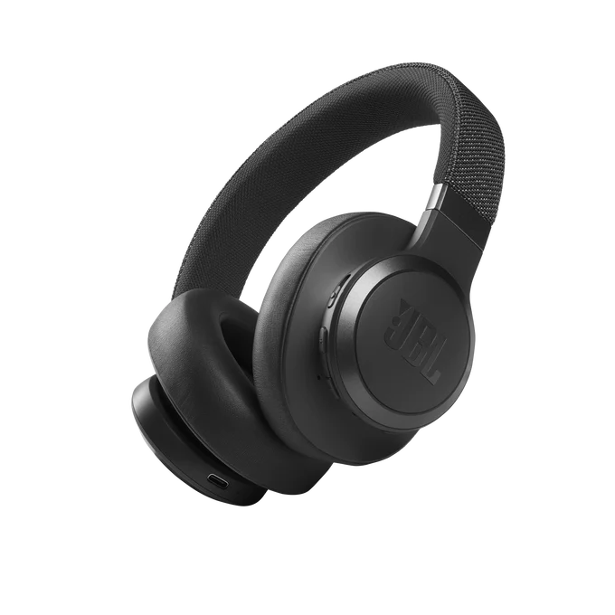

Descripción
Estos audifonos de sistema de conexión via Bluetooth Tiene las siguientes ventajas: Manos libres y llamadas estereo perfectas. Carga hasta 50 horas de batería y incluye Speed Charge. Conexión multipunto. Incluye asistente de voz, incluso con emparejamiento rapido con Google.
Puedes vincular el dispositivo a la app JBL Headphones y cambiar entre los modos de control ambiental: Cancelación de Ruido, Ambient Aware, TalkThru, como también poder configurar el Ecualizador.
Materiales
- Su estructura principal se compone de plastico duro en la diadema, que además está cubierta por una fina capa de tela tramada, que además incluye una capa de espuma en el interior, cerca de la zona de contacto con la cabeza.
- Sus almohadillas son de espuma suave cubiertas/tapizadas de material sintetico (cuerina), los cuales cubren las orejas de forma supraaural, y en su parte interna hay una capa de tela tramada estampada con la letra de la dirección correspondiente a su lado (R de Derecha o L de Izquierda),además que son removibles/reemplazables gracias a su sistema de enganche.
- La parte de los cascos están hecho de plastico duro y adaptada para colocar y extraer las almohadillas.
Contexto
JBL fue fundada en 1946 en Los Ángeles, California, Estados Unidos, por el ingeniero de audio James Bullough Lansing (cuyas iniciales dan nombre a la marca). Además durante el 2021 y los 12 meses de su creación, el auge del teletrabajo y la necesidad de movilidad generó una "nueva normalidad" tras la pandemia, por lo que en respuesta sacaron este tipo de modelo de audifonos.